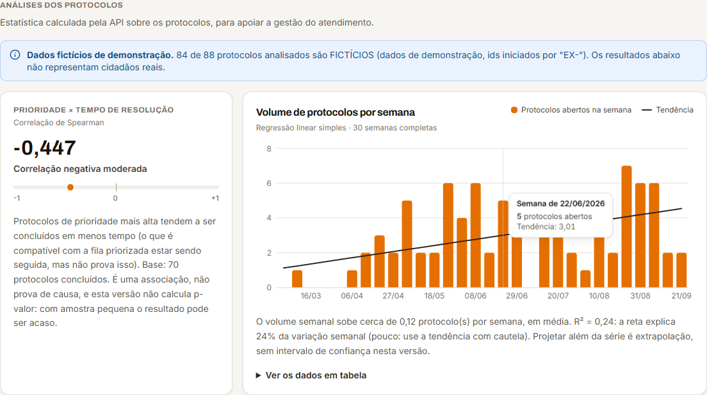

br.gov.taubate.vidareal): trata-se do mesmo sistema.| Nome | |
| RM | |
| Turma | |
| Professor(a) |
Este documento descreve a evolução do HackGov, plataforma GovTech de educação financeira e transparência para o cidadão de Taubaté/SP, na atividade "Visão de Futuro". Partiu-se de um diagnóstico do sistema existente, lido diretamente no código, e foram implementadas melhorias pequenas, testadas e demonstráveis em quatro frentes: segurança da informação (expiração de sessão no servidor, chave da IA fora da URL, backup e restauração do banco e cadeia de hashes na trilha de auditoria); redes de comunicação (análise da arquitetura real, sem infraestrutura nova); estatística aplicada (correlação de Spearman e regressão linear, calculadas em Java e exibidas no painel do atendente); e blockchain (contrato Solidity que registra hashes dos eventos de protocolos, testado e implantado em rede local).
O trabalho final soma 117 testes automatizados no backend (62 pré-existentes e 55 novos) e 22 testes do contrato, todos aprovados na última execução, além de verificações manuais descritas ao longo do texto.
Para separar o que existe do que foi construído e do que é apenas proposta, cada capacidade recebe um rótulo:
| Existente | Já estava implementado no repositório antes da atividade (com evidência no código). |
| Implementado | Construído nesta atividade, com teste ou verificação registrada. |
| Parcial | Existe parte da capacidade; o que falta está descrito. |
| Futuro | Apenas recomendação ou proposta. Não foi construído. |
Dados fictícios. Todos os resultados estatísticos deste documento foram calculados sobre os dados de demonstração do arquivo backend/sql/dados-exemplo.sql, que são inventados (protocolos com identificador EX-...). Eles descrevem esse conjunto de exemplo, não o atendimento real de nenhuma prefeitura.
Rigor. Os números citados vêm de execuções reais (testes, scripts e consultas) registradas na seção 6. Quando algo não foi verificado, o texto diz que não foi. As referências ao final se limitam a fontes que o próprio projeto usa ou que são oficialmente identificáveis; recomenda-se conferi-las antes da entrega.
Trabalho individual. O escopo foi mantido propositalmente simples: nenhuma funcionalidade existente foi substituída, as regras de negócio não foram alteradas, e as melhorias mais complexas aparecem apenas como recomendação.
O sistema oferece ao cidadão um canal digital para abrir e acompanhar protocolos (solicitações) junto à prefeitura e ferramentas de planejamento financeiro (simulação de inflação, metas) e de transparência (indicadores municipais do IBGE e do Banco Central). O atendente público tramita os protocolos e dispõe de uma fila com triagem automática: um classificador Naive Bayes sugere a categoria e regras determinísticas calculam a prioridade. O núcleo transacional é o protocolo; as demais telas o cercam.
A aplicação é um monolito em camadas: uma SPA React consome uma API REST em Spring Boot, que acessa um banco H2 em arquivo por JDBC (Repositorio.java, SQL puro, sem ORM) e consulta serviços externos.
WebConfig, application.properties, DadosPublicosService, ChatController, EmailRecuperacao).| Camada | O que existe (evidência: pom.xml, package.json) |
|---|---|
| Frontend | React 19, Vite 8, Tailwind 4, React Router 7, Recharts, Leaflet, jsPDF |
| Backend | Java 21, Spring Boot 3.5 (web, validation, jdbc, mail) e spring-security-crypto apenas para o BCrypt (sem o framework Spring Security) |
| Banco | H2 em arquivo, schema.sql idempotente, modelado em 3ª forma normal e compatível com Oracle por troca da URL |
| Execução | start.ps1 baixa JDK e Node se faltarem (conferindo SHA-256) e sobe API e interface; Maven Wrapper. Não há Docker nem integração contínua |
| Testes | JUnit 5 com MockMvc e H2 em memória. O frontend não possui testes automatizados |
Python não existe no repositório e não foi introduzido. Na raiz existem arquivos Java legados (Main.java, Usuario.java etc.), um protótipo de console de etapa anterior sem relação com a aplicação, que não foram modificados.
| Tabela | Chave | Observações |
|---|---|---|
usuario | CPF (chave natural) | Perfil cidadao ou atendente (restrição CHECK); e-mail único; guarda só CEP e cidade, por minimização de dados |
recuperacao_senha | SHA-256 do token | Uso único e com expiração; o token em si nunca é gravado |
protocolo | número (data + 5 dígitos) | Etapa, datas de abertura e conclusão; colunas da triagem (pontos, motivos, categoria sugerida, confiança) |
meta | sequência | Valores em DECIMAL; prazo em texto livre |
feedback | sequência | Anônimo de propósito, sem vínculo com usuário |
auditoria | identidade | Quem fez o quê e quando; sem chave estrangeira, para registrar também tentativas de login recusadas |
O login usa CPF e senha com BCrypt (custo 10). Quando o CPF não existe, o servidor compara contra um hash falso para igualar o tempo de resposta, e a mensagem de erro é genérica, o que dificulta a enumeração de usuários. A sessão é um token opaco de 256 bits (SecureRandom) mantido em memória (SessaoService). A autorização é declarativa: a anotação @Autenticado(perfis = ...) é aplicada por um interceptor antes do controller, devolvendo 401 (não identificado) ou 403 (perfil insuficiente). Um cidadão que pede o protocolo de outro recebe 404, não 403, para não confirmar a existência do registro. Há ainda limitação de requisições por IP (login: 5 a cada 15 minutos; recuperação de senha: 10; chat: 20 por minuto; sugestão de triagem: 60 por minuto).
A análise tratou a documentação como hipótese e procurou evidência no código. Foram encontradas as divergências abaixo; nenhuma foi corrigida, por estarem fora do escopo, e todas constam também como limitações (seção 8).
| # | A documentação afirma | O código mostra |
|---|---|---|
| 1 | A sessão expira após 15 minutos de inatividade | Isso só ocorria no navegador (AuthContext.jsx). No servidor, um token continuava válido até o logout ou o reinício. Corrigido na etapa S1. |
| 2 | Metas financeiras persistidas | A tela Metas.jsx usa localStorage. O CRUD /api/v1/metas existe e é testado, mas nenhuma tela o chama. O histórico do simulador de inflação também fica em localStorage |
| 3 | Estatísticas, consolidado de feedback e auditoria | Os endpoints existem, mas não havia tela que consumisse /protocolos/estatisticas, GET /feedbacks e /auditoria. Após a atividade, existe tela para as análises estatísticas; feedback e auditoria continuam sem tela |
| 4 | O manual do chatbot cita "dados socioeconômicos por bairro" | As telas e a API trabalham por município (InstrucaoIA.java ficou desatualizado) |
Antes de qualquer alteração, a suíte existente foi executada (mvnw test): 62 testes, 0 falhas (ApiIntegracaoTest 25, RecuperacaoSenhaTest 14, CalculadoraPrioridadeTest 13, ClassificadorNaiveBayesTest 10). Esse número é o ponto de comparação: ao final, os mesmos 62 testes continuam passando. O classificador de categorias, já existente, relata acurácia leave-one-out de 86,7% sobre um conjunto sintético de 180 exemplos, valor reproduzido na execução da suíte.
O sistema trata dados de cidadãos (CPF, e-mail, cidade, descrição de solicitações, metas financeiras) e registra decisões administrativas (tramitação de protocolos). A Tríade CIA organiza as preocupações:
| Mecanismo | Evidência no código | CIA |
|---|---|---|
| Hash BCrypt de senhas | WebConfig.bCryptPasswordEncoder (custo 10) | C |
| Política de senha forte, validada no servidor | PoliticaSenha.java | C |
| Anti-enumeração de contas | AuthController.login, Repositorio.getHashFalso, RecuperacaoSenhaService.igualarTempo | C |
| Recuperação de senha segura (token de 256 bits, SHA-256 no banco, 15 min, uso único por UPDATE atômico) | RecuperacaoSenhaService, Repositorio.consumirTokenRecuperacao | C, I |
| RBAC declarativo e isolamento entre cidadãos | @Autenticado, AutenticacaoInterceptor, ProtocoloController.podeVer | C, I |
| Limitação de requisições por IP | LimitadorRequisicoes | D, C |
| Validação e sanitização de entradas | Validadores.java, DTOs | I |
| Erros sem vazamento de detalhes internos | TratadorGlobalErros | C |
| Segredos fora do repositório | .env no .gitignore; .env.example | C |
| Trilha de auditoria e log técnico | tabela auditoria; LogRequisicoesFiltro | I |
| Resiliência a falhas de fontes externas | CachePublico, timeouts em DadosPublicosService | D |
As lacunas identificadas, e que orientaram a seleção das quatro melhorias, foram: sessão sem expiração no servidor (C); chave da API de IA na URL (C); trilha de auditoria alterável sem detecção (I); ausência de procedimento de backup (D). Foram também identificadas lacunas que a atividade não trata e apenas recomenda (HTTPS, cabeçalhos de segurança, criptografia do banco em repouso, monitoramento), listadas em 2.5.
Problema. A regra de 15 minutos de inatividade existia apenas no navegador. Um token copiado continuava válido no servidor até o logout, a troca de senha ou o reinício da API.
Solução. A sessão (SessaoService.Sessao) passou a guardar também o instante do último uso. Em resolver(), se o intervalo desde o último uso excede o limite, a sessão é removida e tratada como inexistente (o interceptor responde 401); caso contrário, o prazo é renovado. O limite vem da propriedade vidareal.sessao.inatividade-minutos (padrão 15). O relógio é injetável (Clock), o que permite testar o tempo sem esperar minutos.
Verificação. SessaoServiceTest (7 testes): sessão parada além do limite expira e não volta; no limite exato ainda vale; uso a cada 10 minutos mantém a sessão por 40; token vazio ou desconhecido não resolve. SessaoExpiracaoHttpTest (1 teste, ponta a ponta): com limite de 0 minuto, um token recém-emitido recebe 401 em /auth/me.
Limites. As sessões continuam em memória e se perdem no reinício da API; não há limite absoluto de duração, apenas de inatividade.
Problema. ChatController enviava a chave em ...:generateContent?key=.... URLs aparecem em logs de servidor, proxies e históricos.
Solução. A montagem da requisição foi extraída para montarChamada(), e a chave passou ao cabeçalho x-goog-api-key; a URL ficou sem query string.
Verificação. ChatControllerTest (3 testes) inspeciona a requisição montada: chave presente no cabeçalho, ausente da URL, destino e método corretos. A API real do Gemini não foi chamada (não havia chave de teste): os testes provam como a requisição é montada, não que o provedor a aceita. A confirmação de ponta a ponta exige abrir o chat com uma chave válida configurada.
Problema. A auditoria podia ser alterada ou ter linhas removidas diretamente no banco, sem qualquer indício.
Solução. Cada registro passou a guardar o hash do registro anterior (hash_anterior) e o seu próprio (hash_registro), este calculado com SHA-256 sobre todos os campos (id, ação, recurso, autor, detalhe, instante) mais o hash anterior (CadeiaAuditoria.java). Alterar um registro, apagar um do meio ou reordenar faz o hash recalculado deixar de coincidir. O endpoint GET /api/v1/auditoria/integridade (exclusivo do atendente) percorre a cadeia e devolve se está íntegra e, se não, o primeiro registro inválido e o motivo.
Decisões de projeto. (i) A gravação (Repositorio.registrarAuditoria) é synchronized, pois ler o último hash e gravar o novo precisa ser indivisível; do contrário, duas ações simultâneas partiriam do mesmo "anterior" e a cadeia se bifurcaria. Isso basta para uma instância da API. (ii) O instante é truncado em milissegundos antes de gravar e de calcular o hash, para o valor lido do banco ser idêntico ao gravado. (iii) O hash anterior do primeiro registro é uma sequência de 64 zeros (e não texto vazio, que o Oracle trata como nulo). (iv) Registros antigos, sem hash, são ignorados no início da trilha.
Verificação. CadeiaAuditoriaTest (12 testes, sobre listas em memória): cadeia íntegra; conteúdo alterado aponta exatamente o registro; remoção do meio ou do primeiro registro é detectada no registro seguinte; reordenação quebra a cadeia; recalcular apenas o hash do registro adulterado não basta, pois o elo seguinte o denuncia. AuditoriaIntegridadeTest (4 testes, com o banco): a trilha gravada pela API verifica como íntegra; um UPDATE direto no banco é detectado e o registro, apontado; o cidadão recebe 403 e quem não tem token, 401.
Limite conhecido, registrado em teste (truncamentoDoFimNaoEDetectado): apagar os registros mais recentes deixa o início da cadeia consistente e não é detectado. Quem controla o banco inteiro também pode recalcular todos os hashes. Além disso, a cadeia protege a trilha de auditoria, não as tabelas de negócio: um protocolo alterado diretamente, sem mexer na auditoria, não é detectado por este mecanismo. A defesa natural é guardar o hash mais recente fora do banco (ver Parte 4, seção 5.5).
Problema. Não existia procedimento de backup ou de recuperação.
Solução. Dois scripts PowerShell em backend/, sobre as ferramentas do próprio H2 (Script e RunScript), sem dependência nova: backup-banco.ps1 exporta esquema e dados para backend/backups/vidareal-AAAAMMDD-HHMMSS.sql e mostra o SHA-256 do arquivo; restaurar-banco.ps1 carrega um backup em um banco novo. A restauração não apaga o banco atual: ele é movido para data/antes-da-restauracao-.../ e devolvido ao lugar se a carga falhar. Ambos recusam rodar com a API no ar (o H2 em arquivo aceita um processo por vez). A pasta de backups foi incluída no .gitignore, pois contém dados de cidadãos.
Verificação. Teste de ponta a ponta em banco temporário, em caminho com acento e espaço: com a API real, criou-se um protocolo, fez-se o backup, criou-se outro protocolo e restaurou-se. O número de protocolos foi 5 (no backup), 6 (após a mudança) e 5 (após restaurar), e /auditoria/integridade retornou integra: true no banco restaurado. O backup com a API no ar foi recusado (código de saída 1) e a restauração de arquivo inexistente também (banco intacto). O arquivo de backup tem 0 bytes não-ASCII (o H2 grava os acentos como escapes), logo não depende de codificação.
Achado. Na primeira rodada, o banco restaurado trouxe menos dados do que o observado antes do backup (4 protocolos contra 5). A causa provável, confirmada pelo comportamento (com 4 segundos de espera antes de parar a API os números passaram a coincidir), é que a parada forçada do processo (o mesmo tipo de parada de stop.ps1) perde as gravações dos últimos instantes, ainda não descarregadas pelo H2 para o disco. Não houve instrumentação direta. O README recomenda aguardar alguns segundos antes de parar a API e fazer o backup. O stop.ps1 não foi alterado.
Limites. O backup é manual, fica na mesma máquina do banco e contém dados em texto. Os scripts foram testados apenas no Windows PowerShell 5.1.
Cenário. Uma pessoa com acesso ao arquivo do banco (por exemplo, pelo console H2 ou por cópia do arquivo) altera o texto de um registro de auditoria, para ocultar quem mudou o status de um protocolo.
| Fase | O que acontece no HackGov | Situação |
|---|---|---|
| Prevenção | O arquivo do banco não sai da máquina e o console H2 escuta só em localhost (webAllowOthers=false em start.ps1); os dados de auditoria não têm rota de escrita na API. | Existente |
| Detecção | O atendente consulta /api/v1/auditoria/integridade. A resposta traz integra: false, o identificador do primeiro registro inválido e o motivo ("o conteúdo do registro foi alterado depois de gravado"). | Implementado |
| Contenção e evidência | Preservar uma cópia do arquivo do banco no estado atual antes de qualquer correção. | Procedimento |
| Recuperação | Restaurar o último backup íntegro em um banco novo (restaurar-banco.ps1); o banco comprometido é guardado, não apagado. Verificar a integridade do restaurado e comparar com o banco guardado para recuperar o que foi gravado depois do backup. | Implementado |
| Alerta automático e âncora externa | Hoje a verificação é manual. Um alerta periódico para integra: false e a guarda do hash mais recente fora do banco fechariam as lacunas do quadro acima. | Futuro |
Demonstração reproduzível. O teste AuditoriaIntegridadeTest.adulteracaoNoBancoEDetectada executa exatamente o cenário (um UPDATE direto no banco, seguido da verificação e da conferência de que o registro apontado é o alterado). Para mostrar ao vivo: abrir o endpoint como atendente (integra: true), alterar um detalhe no console H2 (.\start.ps1 -ConsoleBanco) e consultar de novo.
Cenário complementar: reutilização de um token roubado. Com a S1, um token abandonado ou copiado deixa de valer após 15 minutos sem uso (antes, valia indefinidamente). A limitação de tentativas de login por IP (existente) trata a força bruta.
| Tema | Situação inicial | Implementado | Recomendação futura Futuro |
|---|---|---|---|
| Autenticação e autorização | BCrypt, RBAC por anotação, 401/403/404 | Expiração no servidor (S1) | Login via gov.br (OAuth 2.0), já previsto no README; segundo fator; limite absoluto de sessão; sessões fora da memória |
| Controle de acesso e privilégios | Dois perfis; atendente vê todos os protocolos e pode excluí-los | Nenhuma alteração (regra de negócio mantida) | Perfil de auditor somente leitura; revisar a exclusão física de protocolos |
| Criptografia em trânsito | HTTPS nas chamadas externas; SMTP com STARTTLS; API local em HTTP | Chave do Gemini fora da URL (S2) | TLS na API ou em proxy reverso, HSTS, cabeçalhos de segurança (CSP) |
| Criptografia em repouso | Hash de senhas e tokens; demais dados em texto no arquivo H2 | Nenhuma | Cifra de arquivo do H2 ou banco gerenciado cifrado; backups cifrados |
| Segredos e credenciais | .env fora do git | Chave fora da URL (S2) | Cofre de segredos e rotação periódica das chaves |
| Backup e recuperação | Inexistente | Scripts de backup e restauração testados (S4) | Rotina automática, cópia em outro local, cifrada, com teste periódico de restauração |
| Logs e auditoria | Log técnico e trilha mutável | Cadeia de hashes e verificação (S3) | Tela de auditoria; identificador de correlação e IP do autor no registro; âncora externa do hash atual |
| Monitoramento e incidentes | /health devolve "ok" fixo, sem checar o banco; LOGIN_FALHOU é gravado, mas não analisado | Nenhuma | Verificação de saúde que consulte o banco; alertas para falhas de login em série e para integra: false |
Escopo. Conforme a decisão do projeto, esta parte é uma análise da arquitetura existente. Nenhuma infraestrutura de rede foi construída ou alterada. As recomendações de produção estão marcadas como Futuro.
| Enlace | Protocolo | Proteção existente | Lacuna |
|---|---|---|---|
| Navegador → API | HTTP, JSON, token Bearer no cabeçalho (apiClient.js) | CORS restrito às origens localhost:5173 e 127.0.0.1:5173 (WebConfig); timeout de 30 s no cliente; 401 derruba a sessão local | Sem TLS: token e CPF trafegam em claro fora de localhost. Sem cabeçalhos de segurança |
| API → banco | JDBC dentro do mesmo processo (H2 em arquivo) | Não há porta de rede aberta para o banco. Com start.ps1 -ConsoleBanco, o console web escuta somente em localhost:8082 | Trocar para um banco em servidor (a URL é configurável) exigiria proteger esse enlace |
| API → dados públicos (BCB, IBGE, BrasilAPI, ViaCEP, OSM) | HTTPS | Timeouts (15 s; conexão 8 s); cache com validade por tipo (6 h a 7 dias); último valor conhecido em caso de falha; erro padronizado 503 FONTE_INDISPONIVEL | Sem lista de destinos permitidos na saída |
| API → Gemini | HTTPS | Timeout de 20 s; tratamento do 429; limite de 20 mensagens por minuto por IP; chave em cabeçalho (S2) | Chave em memória; sem cofre |
| API → SMTP | SMTP com STARTTLS obrigatório por padrão | Timeouts de 10 s; envio em fila própria, fora da requisição (também evita revelar quais CPFs têm conta pelo tempo de resposta) | Falha de entrega só aparece no log |
| Navegador → provedores de mapa e VLibras | HTTPS | Camadas de mapa (CARTO, OpenStreetMap, OpenTopoMap, Esri), fontes do Google e o plugin do VLibras são buscados diretamente pelo navegador, conforme o código do frontend | Dependência de terceiros no cliente, sem política de conteúdo (CSP) |
Outros pontos observados no código. A limitação de requisições usa getRemoteAddr(): atrás de um proxy reverso, todos os clientes apareceriam com o mesmo IP, e o limite passaria a valer para o grupo inteiro. O envio de avaliações (POST /feedbacks) é público e não tem limite de taxa. A propriedade server.tomcat.max-http-form-post-size, comentada como limite do corpo da requisição, refere-se a formulários; não foi verificado se ela limita corpos JSON.
| Pilar | Como a rede se relaciona com o pilar no HackGov | Situação |
|---|---|---|
| Confidencialidade | Em HTTP, qualquer ponto do caminho lê o token e o CPF. O TLS protege o conteúdo em trânsito. O CORS limita quais páginas web conseguem ler as respostas, mas não é barreira contra clientes que não são navegadores. O banco no mesmo processo evita expor uma porta de dados. A chave da IA no cabeçalho (S2) evita que ela apareça em logs de URL. | Parcial (chave fora da URL S2; TLS Futuro) |
| Integridade | O TLS também impede a alteração do tráfego no caminho; o HSTS impede o rebaixamento para HTTP. No servidor, a validação não confia no cliente (o servidor refaz a triagem na criação do protocolo). A cadeia de hashes (S3) estende a garantia de integridade ao registro dos eventos. | Parcial (S3; TLS/HSTS Futuro) |
| Disponibilidade | Timeouts impedem que uma fonte lenta prenda a API; o cache devolve o último valor quando a fonte cai; a fila de e-mail isola a falha do SMTP; o limite de taxa mitiga abuso. Restrições: instância única, limitador e sessões em memória (perdidos no reinício) e limitador por IP sensível a proxy. | Existente (com limites) |
O desenho trata a queda de cada dependência de modo diferente. Fontes públicas: CachePublico devolve o último valor bom e registra um aviso; sem cópia alguma, a API responde 503 padronizado, e a tela continua útil sem aquele indicador. Assistente virtual: indisponibilidade da chave, cota esgotada (429) e tempo limite têm mensagens próprias; o restante do sistema não é afetado. E-mail: sem SMTP configurado, a rota responde 503 antes de olhar o CPF (resposta igual para todos); com SMTP lento, a requisição não espera. O cliente HTTP do frontend aborta chamadas após 30 s e distingue "sem conexão" de "tempo esgotado". A principal fragilidade é a instância única: se a API cair, o serviço cai, e as sessões se perdem.
nosniff).VIDAREAL_DB_URL).O banco de demonstração nasce com 4 protocolos (2 concluídos), insuficiente para qualquer análise. Para demonstrar a metodologia foi usado o conjunto de exemplo de backend/sql/dados-exemplo.sql: 13 cidadãos, 84 protocolos (68 concluídos), 41 avaliações e 15 metas, todos fictícios, de abril a outubro de 2026. Com os 4 protocolos de demonstração, o painel analisa 88 protocolos, dos quais 70 estão concluídos e triados. Os dados de exemplo podem ser carregados e removidos com backend/carregar-dados-exemplo.ps1 (Apêndice A).
| Aspecto | Avaliação |
|---|---|
| Volume | Suficiente apenas para demonstrar o método: 70 pares para o Spearman e 30 semanas para a regressão. Com dados reais, o resultado dependerá do volume efetivo da prefeitura. |
| Estrutura | Campos necessários presentes: pontos de prioridade, datas de abertura e conclusão. A prioridade é ordinal, com poucos níveis (muitos empates). |
| Qualidade | Dados sintéticos: o relacionamento entre prioridade e tempo foi definido por quem escreveu o exemplo. Os resultados não são evidência sobre o atendimento real. |
| Restrição estrutural | O feedback é anônimo por decisão do projeto (sem vínculo com protocolo), então satisfação e tempo de atendimento só poderiam ser relacionados em agregado mensal (cerca de 6 pontos): inadequado para regressão. Por isso não foi analisado. |
| (a) Prioridade × tempo de resolução | (b) Tendência do volume de protocolos | |
|---|---|---|
| Variáveis | Pontos de prioridade da triagem (0 a 7) e dias entre abertura e conclusão, para protocolos concluídos e triados | Número da semana (eixo x) e protocolos abertos na semana (eixo y) |
| Justificativa | A triagem existe para ordenar a fila. Se prioridade alta não é atendida mais rápido, a fila priorizada não está sendo seguida ou os pesos precisam de revisão. | Mostra se a demanda sobe ou cai e quão estável é, informação para dimensionar o atendimento. |
| Método | Correlação de Spearman: robusta a valores extremos e adequada a variável ordinal com empates, pois não supõe relação em linha reta | Regressão linear simples por mínimos quadrados, com R² como medida de ajuste |
| Decisão apoiada | Revisar pesos da triagem e a disciplina de uso da fila priorizada | Planejar a quantidade de atendentes nas semanas seguintes (com cautela, ver 4.6) |
Fórmulas. O coeficiente de Spearman é o de Pearson aplicado aos postos (ranks) das duas variáveis, com a média dos postos nos empates:
ρ = Σ(Rx,i − R̄x)(Ry,i − R̄y) ÷ √[ Σ(Rx,i − R̄x)2 · Σ(Ry,i − R̄y)2 ]
Na regressão y = a + bx, a inclinação é b = Sxy ÷ Sxx, o intercepto é a = ȳ − b·x̄ e o R2 é b2·Sxx ÷ Syy (a parcela da variação de y explicada pela reta), em que Sxy, Sxx e Syy são as somas dos produtos e dos quadrados dos desvios em relação às médias.
analise), sem Python e sem dependência nova: AnaliseEstatistica (as fórmulas) e AnaliseProtocolos (monta a resposta). Este segundo é uma função pura sobre a lista de protocolos, o que a torna testável.GET /api/v1/protocolos/analises, exclusivo do atendente (403 para o cidadão, 401 sem token).disponivel: false e o motivo, em vez de um número. As semanas sem protocolo contam como zero. A primeira e a última semana são descartadas, porque a série começa e termina no meio delas e puxaria a reta para baixo.EX-, e a interface exibe a faixa "Dados fictícios de demonstração" quando houver algum.AnalisesProtocolos.jsx, no Dashboard do atendente, com Recharts, biblioteca já existente no projeto): cartão com o ρ e uma escala de −1 a +1; colunas do volume semanal com a reta de tendência, legenda, dica ao passar o mouse e tabela com os mesmos dados.
As cores do gráfico (colunas no tom forte da marca e a tendência em tinta neutra) foram validadas com o script de validação de paletas do projeto de visualização de dados: o contraste em relação à superfície é de pelo menos 3:1 nos temas claro e escuro, e a separação entre as duas cores é ampla para quem tem daltonismo (ΔE de 34,7 a 42,9 no tema claro). O mesmo validador acusou falha nos critérios de luminosidade e croma para a linha cinza; como o próprio script informa que seu escopo são paletas categóricas, e o cinza neutro é intencional (destaque com cor mais cinza de apoio), esse resultado foi tratado como esperado.
Testes com valores calculados à mão (AnaliseEstatisticaTest, 12 testes), com a conta no comentário de cada teste: relação perfeita (±1); relação monotônica não linear (ρ = 1); exemplo clássico de livro-texto com ρ = −29/165 (soma dos d2 = 194); caso com empates, ρ = 3/√10; reta exata y = 2x + 1 (inclinação 2, intercepto 1, R2 = 1); caso com ruído (x = 1..5, y = 2, 4, 5, 4, 5), com inclinação 0,6, intercepto 2,2 e R2 = 0,6; y constante (R2 indefinido); entradas inválidas. AnaliseProtocolosTest (13 testes) cobre a montagem (amostra insuficiente, semanas vazias, descarte das bordas, aviso de dados fictícios), e AnalisesEndpointTest (3 testes), o acesso e o formato da resposta.
Conferência independente. Com os dados de exemplo carregados em um banco temporário, a resposta real da API foi comparada com outra implementação (PowerShell), que lê os dados diretamente do banco por SQL:
| Métrica | API (Java) | Cálculo independente |
|---|---|---|
| Spearman: amostra (n) | 70 | 70 |
| Spearman: ρ | −0,447 | −0,446915 |
| Regressão: semanas | 30 | 30 |
| Inclinação | 0,118 | 0,117686 |
| Intercepto | 1,127 | 1,126882 |
| R2 | 0,236 | 0,235521 |
| Série semanal (30 valores) | idêntica nas duas implementações | |
Na primeira comparação, o Spearman divergiu (n = 70 contra 67). A hipótese era que três protocolos fictícios sem triagem recebem a triagem quando a API sobe (comportamento já existente em TriagemService), e que os dados haviam sido exportados antes disso. Refazendo a exportação depois de subir a API, os valores passaram a coincidir. A divergência era da ordem da verificação, não do código.
| Análise | Resultado | Interpretação e uso na decisão |
|---|---|---|
| Prioridade × tempo (Spearman) | ρ = −0,447 (correlação negativa moderada), n = 70 | Nesse conjunto, protocolos de prioridade mais alta tendem a ser concluídos em menos tempo, o que é compatível com a fila priorizada sendo seguida, mas não prova isso. Com dados reais, um ρ perto de zero ou positivo sugeriria revisar os pesos da triagem ou a forma de uso da fila. |
| Tendência de volume (regressão) | +0,118 protocolo por semana; intercepto 1,127; R2 = 0,236; 30 semanas | O volume semanal sobe cerca de 0,12 protocolo por semana, mas a reta explica só 24% da variação, de modo que a tendência deve ser usada com cautela no dimensionamento da equipe. |
Estes números descrevem o conjunto de exemplo. Como a relação entre prioridade e tempo foi definida por quem escreveu os dados, o ρ não informa como o atendimento real funciona. A interface avisa isso ao usuário.
Escopo. Protótipo em blockchain/, testado e implantado em rede local (Hardhat). Não há integração entre a API Java e a blockchain (sem web3j, sem rede permissionada, sem árvore de Merkle). A integração aparece apenas como possibilidade futura. Não se trata de uma funcionalidade pronta para produção.
Registro de integridade do ciclo de vida dos protocolos. Cada mudança de etapa (Criada, Em análise, Concluído) gera um evento cujo hash é registrado em ordem em um contrato. Depois, o cidadão, a prefeitura ou um órgão de controle podem verificar, de forma independente do banco da prefeitura, que o estado de um protocolo não foi alterado desde o registro e quando o registro foi feito. O caso é coerente com o objetivo do HackGov (transparência e confiança) e complementa a cadeia de hashes da auditoria (S3): enquanto esta detecta alterações da trilha, a blockchain fornece uma âncora fora do controle do banco.
| Critério | Dados na cadeia | Apenas hashes (escolhido) |
|---|---|---|
| Dados pessoais e LGPD | O protocolo é ligado ao CPF e tem texto livre; dados pessoais gravados em uma cadeia não podem ser apagados, o que conflita com o direito de eliminação (LGPD, art. 18) | Nenhum dado pessoal sai do banco; só valores de 32 bytes |
Exclusão (DELETE existe no sistema) | Incompatível com registro imutável | O dado é apagado no banco; o hash permanece sem revelar o conteúdo |
| Custo e tamanho | Alto, cresce com o texto | Constante (2 slots por evento) |
| Fonte da verdade | Duplicada | O banco relacional continua sendo a fonte; a cadeia só comprova |
Dois cuidados com o cálculo dos hashes: o identificador do protocolo é um HMAC-SHA256 do número, com uma chave que não sai da API (o número tem pouca aleatoriedade, e um SHA-256 simples seria recalculável por força bruta); e o hash do estado é um SHA-256 de uma representação canônica (número, tipo, etapa e datas), sem CPF, nome nem descrição.
RegistroProtocolos.solDois papéis: o dono (quem implanta) só troca o registrador; o registrador (conta de serviço, no futuro a API) é o único que registra. Leitura e verificação são públicas.
| Função | Quem | O que faz |
|---|---|---|
registrar(idProtocoloHash, etapa, hashEstado) | registrador | Acrescenta um evento ao histórico do protocolo e devolve o índice |
transferirRegistrador(novo) | dono | Troca a conta autorizada a registrar |
quantidadeEventos, obterEvento, ultimoEvento | qualquer um | Leitura do histórico |
verificar(id, índice, etapa, hashEstado) | qualquer um | Devolve verdadeiro só se o evento existe e confere exatamente; nunca reverte |
Eventos: EventoRegistrado (protocolo, índice, etapa, hash, registrador, data do bloco) e RegistradorAlterado. Erros personalizados: NaoAutorizado, EtapaInvalida (fora de 1 a 3), HashInvalido (zero), EnderecoInvalido, EventoDuplicado, EventoInexistente.
Regras de negócio. (i) Os eventos ficam em sequência, sem proibir retrocesso de etapa: o sistema permite reabrir um protocolo concluído, e a reabertura fica visível no histórico. Assim o contrato não duplica a regra de negócio do backend. (ii) O mesmo evento duas vezes seguidas (mesma etapa e mesmo hash) é recusado como proteção contra reenvio acidental; a mesma etapa com estado diferente (edição) é aceita. (iii) Não existe função para alterar ou apagar um evento.
Testes (Hardhat, Mocha e Chai; blockchain/test/RegistroProtocolos.test.js): 22 testes, todos aprovados. Cobrem implantação, registro e emissão do evento, controle de acesso (o dono e contas quaisquer não registram), etapas e hashes inválidos, duplicidade, histórico em ordem incluindo a reabertura, independência entre protocolos, verificação positiva e negativa, troca do registrador e uma simulação de como a API calcularia os hashes e detectaria uma alteração posterior no banco. Um teste confirma que a lista de funções do contrato não contém nenhuma que altere ou apague eventos.
Verificação dos testes por mutação (manual). O contrato foi quebrado de propósito de 5 formas: sem controle de acesso no registrar; sem a checagem de duplicado; verificar ignorando o hash; aceitando etapa inválida; transferirRegistrador sem restrição ao dono. Cada mutação fez ao menos um teste falhar, e o contrato original foi restaurado (22 aprovados). A primeira tentativa dessa verificação não produziu números (falha na leitura dos resultados) e foi refeita; só os resultados da segunda são citados.
Implantação em rede local (npm run node, npm run deploy e npm run demo). A demonstração usa um protocolo fictício e registra os três eventos do ciclo de vida. Abaixo, um trecho da saída (os passos 2, de leitura do histórico, e 5, de contagem dos eventos emitidos, foram omitidos por brevidade):
$ npm run deploy
Rede ............ localhost
Contrato ........ 0x5FbDB2315678afecb367f032d93F642f64180aa3
Dono ............ 0xf39Fd6e51aad88F6F4ce6aB8827279cffFb92266
Registrador ..... 0x70997970C51812dc3A010C7d01b50e0d17dc79C8
$ npm run demo
Protocolo fictício DEMO-1793417158874
identificador na cadeia: 0xfe7abe0f…f4d038 (HMAC do número; o número não aparece)
1) Registrando os eventos (cada um vira uma transação):
Criada hash do estado 0x4daead96…a50674 bloco 2
Em análise hash do estado 0x9f1cbaf7…7ae50e bloco 3
Concluído hash do estado 0xb5abba49…492cd5 bloco 4
3) Verificação de integridade (o hash do banco confere com o registrado?):
evento [0] com o estado original ........ CONFERE
evento [1] com o estado original ........ CONFERE
evento [2] com o estado original ........ CONFERE
evento [2] com a data de conclusão alterada ... NÃO CONFERE (alteração detectada)
4) Controle de acesso: uma conta que não é o registrador tenta registrar:
recusado pelo contrato: NaoAutorizadoO motivo da recusa é decodificado do erro devolvido pelo contrato. Em uma versão anterior do script, essa linha vinha de um texto fixo de reserva; a recusa era real, mas o motivo exibido não era a evidência. O script foi corrigido.
Dependências (somente em blockchain/, versões fixas): hardhat 2.29.1, @nomicfoundation/hardhat-ethers 3.1.3, @nomicfoundation/hardhat-chai-matchers 2.1.2, ethers 6.17.0 e chai 4.5.0. Optou-se pela série 2 do Hardhat (a mais documentada) e por cinco pacotes em vez do hardhat-toolbox, que traria cerca de quinze a mais sem uso. O compilador Solidity (0.8.28) é baixado na primeira compilação.
Possibilidade, não implementada: a API Java, ao gravar uma mudança de etapa, calcularia o identificador e o hash do estado e os enviaria ao contrato por uma conta de serviço, de forma assíncrona (por exemplo, uma tabela de pendências processada em segundo plano), para que uma blockchain fora do ar nunca impeça o atendimento. Um endpoint de verificação recalcularia o hash do estado atual no banco e chamaria verificar. O hash mais recente da cadeia de auditoria (S3) também poderia ser ancorado no contrato, o que fecha a limitação de que apagar os registros mais recentes da auditoria não é detectado. Para uso real, a rede deveria ser permissionada (por exemplo, entre a prefeitura e um órgão de controle).
Todos os números abaixo vêm da execução final, feita imediatamente antes da redação deste documento.
| Classe | Testes | Origem |
|---|---|---|
ApiIntegracaoTest | 25 | Existente |
RecuperacaoSenhaTest | 14 | Existente |
CalculadoraPrioridadeTest | 13 | Existente |
ClassificadorNaiveBayesTest | 10 | Existente |
SessaoServiceTest e SessaoExpiracaoHttpTest | 7 + 1 | S1 |
ChatControllerTest | 3 | S2 |
CadeiaAuditoriaTest e AuditoriaIntegridadeTest | 12 + 4 | S3 |
AnaliseEstatisticaTest, AnaliseProtocolosTest e AnalisesEndpointTest | 12 + 13 + 3 | E1 |
| Total | 117 | 62 existentes + 55 novos |
| Item | Resultado | Observação |
|---|---|---|
Contrato (hardhat test) | 22 aprovados | Mais 5 mutações manuais, todas detectadas |
| Frontend: lint e build | Sem erros; build concluído | O aviso de tamanho do pacote já existia. O frontend não tem testes automatizados |
| Backup e restauração | Protocolos 5, 6 e 5 | Teste de ponta a ponta com a API real e banco temporário |
| Análises: conferência independente | Coincidência (n = 70; ρ = −0,447) | Cálculo em outra implementação, lendo o banco por SQL |
| Painel no navegador (Edge) | Tema claro, escuro e 390 px; perfil cidadão sem a seção | Verificação manual com captura de tela; 0 erros de console |
| Carga e remoção dos dados de exemplo | 84 protocolos carregados; remoção deixa 4 reais | Executado em banco temporário; repetível sem duplicar |
| Implantação e demonstração do contrato | Executadas em rede local | Saída reproduzida na seção 5.4 |
| Requisito | Situação inicial | Nesta atividade | Fica como recomendação |
|---|---|---|---|
| Parte 1. Confidencialidade | Existente Hash de senhas e tokens, RBAC | Implementado Sessão expira no servidor; chave fora da URL | Futuro Criptografia do banco; cofre de segredos |
| Integridade | Parcial Validação e trilha mutável | Implementado Cadeia de hashes com verificação | Futuro Âncora externa do hash atual |
| Disponibilidade | Parcial Cache, timeouts, limite de taxa | Implementado Backup e restauração testados | Futuro Backup automático e fora da máquina |
| Logs, auditoria, monitoramento | Parcial Log técnico e trilha | Implementado Verificação de integridade da trilha | Futuro Alertas, tela de auditoria, health profundo |
| Cenário de incidente | Não havia | Implementado Adulteração detectada e recuperação | Futuro Detecção automática |
| Parte 2. Redes e relação com a CIA | Parcial Proteções pontuais | Análise da arquitetura real e relação com a CIA (seção 3). Nenhuma infraestrutura nova | Futuro TLS, proxy, segmentação, monitoramento de tráfego |
| Parte 3. Correlação | Só estatística descritiva | Implementado Spearman, endpoint, painel | Futuro p-valor, intervalos, dados reais |
| Regressão | Inexistente | Implementado Regressão linear do volume semanal | Futuro Regressão múltipla |
| Parte 4. Smart Contract (Solidity) | Inexistente | Implementado Contrato, 22 testes, implantação local | Futuro Rede permissionada |
| Integração com a aplicação | Inexistente | Descrita como possibilidade (5.5) | Futuro Integração assíncrona com a API |
Esta seção reúne, em um só lugar, o que não foi feito, não foi verificado ou tem uma restrição que o leitor precisa conhecer.
localStorage (Metas.jsx), manual do chatbot desatualizado ("por bairro"), feedback e auditoria sem tela (seção 1.6).max-http-form-post-size limita corpos JSON (seção 3.1).integra: false e para falhas de login em série; /health que consulte o banco; tela de auditoria.A atividade combinou diagnóstico e implementação, e o critério foi o de acrescentar capacidade sem reescrever o sistema: nenhuma funcionalidade foi removida, nenhuma regra de negócio foi alterada e os 62 testes originais continuam passando junto de 55 novos. Cada uma das quatro frentes produziu algo demonstrável: um incidente de adulteração que passou a ser detectado e recuperável; um quadro de análise de rede que relaciona a arquitetura real aos três pilares da CIA; duas análises estatísticas conferidas contra um cálculo independente; e um contrato com testes, implantado em rede local. Igualmente importante é o que o trabalho declara não ter feito: os resultados estatísticos são de dados fictícios, a blockchain não está integrada à API, e várias medidas de produção (TLS, criptografia em repouso, monitoramento, âncora externa) permanecem como recomendação. Essas fronteiras estão registradas nas seções 8 e 9.1, de modo que a evolução futura possa partir de um ponto de apoio verificado.
Pré-requisitos: Windows 10 ou 11 com internet na primeira execução (o start.ps1 baixa JDK 21 e Node.js se faltarem). Comandos a partir da raiz do projeto.
cd backend
.\mvnw.cmd -B test.\start.ps1 # cria o banco na primeira vez
.\stop.ps1
cd backend
.\carregar-dados-exemplo.ps1 # 84 protocolos fictícios (-Remover apaga só os exemplos)
cd ..
.\start.ps1 # entre como atendente: CPF 153.509.460-56 / senha Atendente@123# como atendente: GET http://localhost:3001/api/v1/auditoria/integridade (integra: true)
.\start.ps1 -ConsoleBanco # console H2 em http://localhost:8082
# altere um registro: UPDATE auditoria SET detalhe = 'adulterado' WHERE id = '...';
# consulte o endpoint de novo: integra: false e o id do registro alteradocd backend
.\backup-banco.ps1
.\restaurar-banco.ps1 -Backup .\backups\vidareal-AAAAMMDD-HHMMSS.sqlcd blockchain
npm ci
npm test # 22 testes
npm run node # terminal 1: rede local na porta 8545
npm run deploy # terminal 2
npm run demomsedge --headless=new --no-pdf-header-footer --print-to-pdf=docs\HackGov-Visao-de-Futuro.pdf docs\relatorio-visao-de-futuro.html| Etapa | Arquivos principais |
|---|---|
| S1 | seguranca/SessaoService.java, application.properties; testes SessaoServiceTest, SessaoExpiracaoHttpTest |
| S2 | web/ChatController.java; teste ChatControllerTest |
| S3 | seguranca/CadeiaAuditoria.java (novo), repositorio/Repositorio.java, modelo/RegistroAuditoria.java, web/IndiceController.java, schema.sql; testes CadeiaAuditoriaTest, AuditoriaIntegridadeTest |
| S4 | backend/backup-banco.ps1, restaurar-banco.ps1, banco-comum.ps1, carregar-dados-exemplo.ps1; .gitignore, README.md |
| E1, E2 | analise/AnaliseEstatistica.java, analise/AnaliseProtocolos.java (novos), web/ProtocoloController.java; frontend/src/components/AnalisesProtocolos.jsx (novo), pages/Dashboard.jsx, api/protocoloService.js; testes AnaliseEstatisticaTest, AnaliseProtocolosTest, AnalisesEndpointTest |
| B1 | blockchain/: contracts/RegistroProtocolos.sol, test/RegistroProtocolos.test.js, scripts/deploy.js, scripts/demo.js, hardhat.config.js, package.json, README.md |
| Documento | docs/relatorio-visao-de-futuro.html (fonte) e docs/HackGov-Visao-de-Futuro.pdf |
Os arquivos legados da raiz, a tela de Metas e as regras de exclusão de protocolos não foram modificados.
Fontes que o projeto usa ou que são oficialmente identificáveis. Recomenda-se conferir a redação e a numeração dos artigos antes da entrega.
Script e RunScript, o compilador e o framework de testes.x-goog-api-key).README.md, backend/, frontend/, blockchain/), que é a fonte primária de todas as evidências citadas.